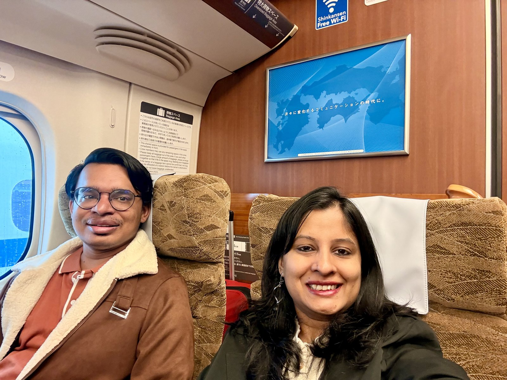
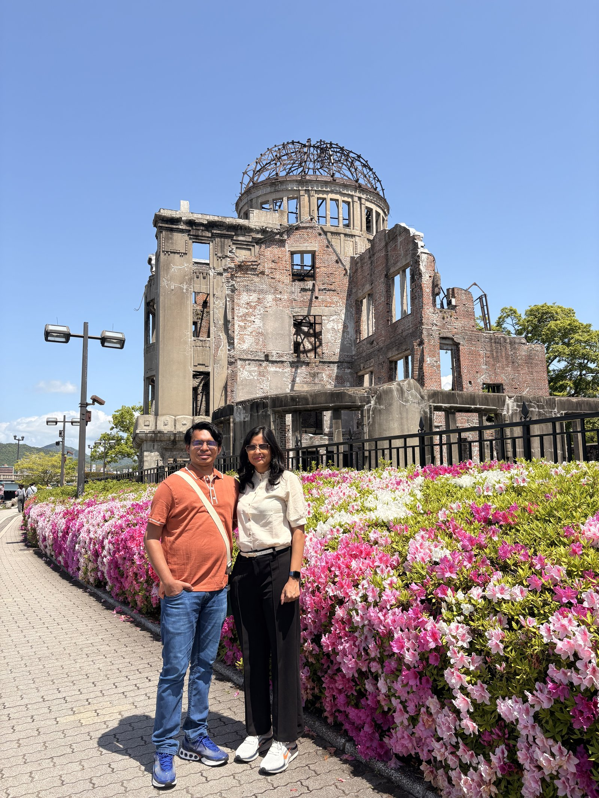
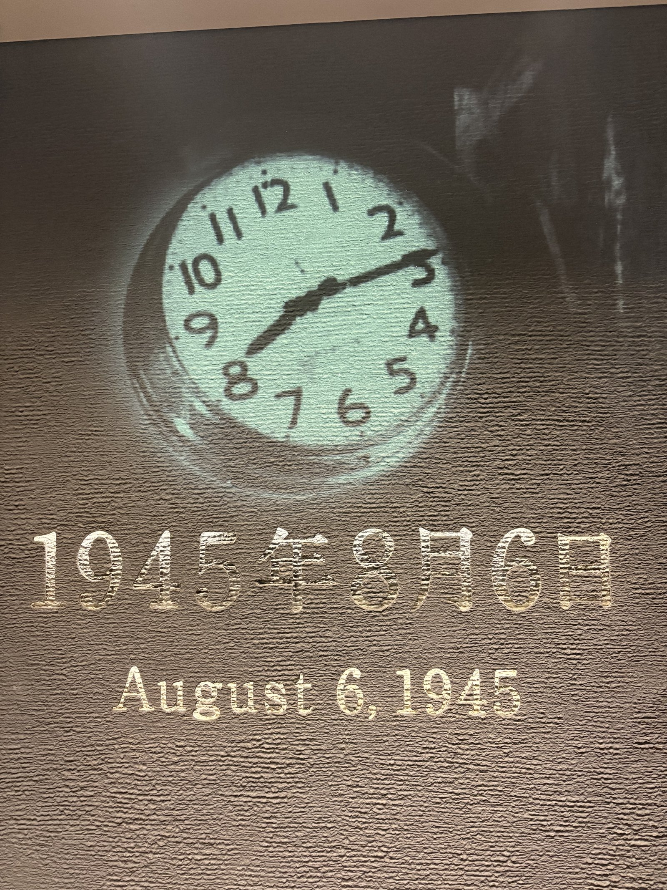
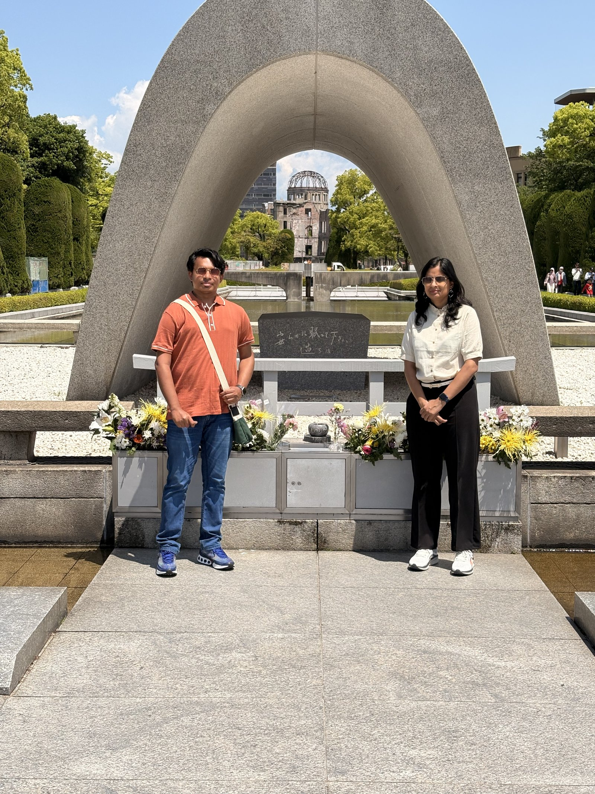
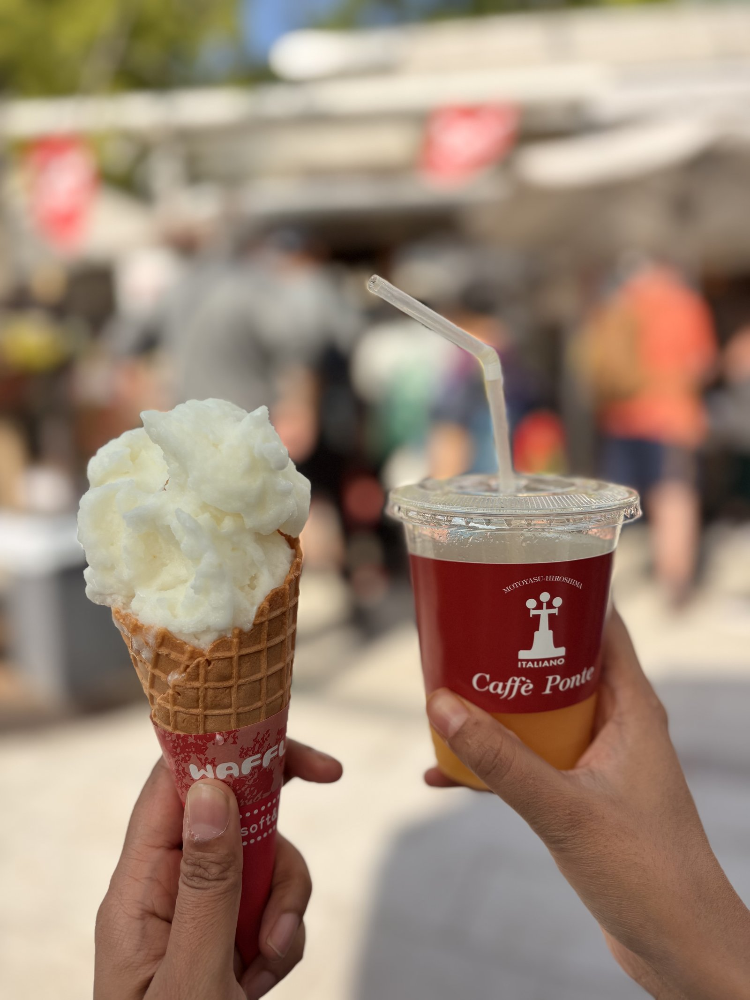

Day 1: 27th April
Shinkansen, A-Bomb Dome & the Peace Museum
The 7:50 a.m. Shinkansen & the Onigiri Hunt
Our bullet train was at 7:50 a.m., which meant lugging two suitcases and a backpack out of the hotel a little after 6. Osaka Station, like every big Japanese station, is a place you could play hide-and-seek in for an afternoon and still lose. Bewilderingly large, beautifully signposted, but somehow always one corridor more than you expect.
A small moment that stuck with me: I'd entered the wrong gate trying to collect a station stamp, and the staff let me exit through one gate and re-enter through another, just so I could get my stamp. No fuss, no fine, just a quiet smile and a wave-through. Japan's customer service stops being remarkable only because it keeps happening, everywhere, all the time.
After three different stores and a small symphony of Google Translate, I finally tracked down vegetarian onigiri and a handful of snacks for the train. Then we boarded.
The Shinkansen is its own quiet miracle. Wide seats, no sound, snack trolleys that glide through like they're on ice. I've napped on a hundred trains in my life — this felt like falling asleep on a reclining sofa at home. Harshit had to wake me when we pulled in.

Arriving in Hiroshima · Lockers, Day Pass & the Red Loop Bus
We rolled into Hiroshima a little before 10. Bags into the station locker, Hiroshima day pass in hand, and a plan: cover the A-Bomb Dome and Peace Memorial Park in the morning, then push out to Miyajima Island in the afternoon. Some days, though, don't go according to plan — and some days, even Google Maps decides to play along with the chaos. (Foreshadowing.)
We caught the Hiroshima sightseeing loop bus — the friendly red one that links the major sights — and got off at the Dome.
Standing in Front of the A-Bomb Dome
There is no easy way to write about this. The skeleton of the Genbaku Dome has been left exactly as it was on the morning of August 6, 1945 — every cracked beam and exposed brick a deliberate, public refusal to forget. You can read about Hiroshima all your life. Standing in front of the building that survived the blast is something else.

Inside the Peace Memorial Museum
We crossed into Peace Memorial Park and spent the rest of the morning at the museum. There is a 3D projection sequence that reconstructs the bombing minute by minute, and every artefact — a child's burnt tricycle, a stopped watch, a scrap of school uniform — is curated with a quiet, unflinching grace. I came out emotional. I came out thinking: physics should be the thing that brings us peace and prosperity, not the thing that ruins lives for generations.
We finished the museum at 1 p.m., hungry and a little hollowed out.

Lunch & the Miyajima Decision
The plan was Hiroshima's signature okonomiyaki at a famous spot near the park. The queue, predictably, was around the block. Harshit pulled up an Indian restaurant nearby — except "nearby" took 30 to 40 minutes of wandering to actually find. By the time we'd eaten, it was 2 p.m.
That left a math problem. Miyajima is a 2.5-hour round trip with the floating torii at the end. Our overnight Willer bus to Tokyo left at 6:05 p.m. Doing both would have meant rushing the most beautiful part. So we made the harder call: skip Miyajima, slow down, sit with Hiroshima a little longer. It's the one regret of the day, and the reason we'll come back.

If you only saw the rest of Hiroshima — the trams, the kids on bikes, the lemon sorbet by the lake — you'd never believe what this city has lived through. Hard work, hope, and a stubborn belief in the future. Hiroshima is a living lesson in the growth mindset.
Hondori, the Sketchers Detour & a Lemon Sorbet
The afternoon belonged to the regular city. We wandered Hondori arcade, the covered shopping street near the park, and after a long internal debate about how many shoes is too many shoes, walked out of a Sketchers outlet with one pair each. (I wanted three. Suitcase rules.) Then we sat by the water with lemon sorbet, watching the ducks drift past, letting the morning settle.

We even circled back to the loop bus just to look — a few more neighbourhoods rolled past the window: tram lines, riverside walks, schoolkids cycling home. I think we both dozed off for a stop or two.
The Willer Bus & a Three-Minute Cliffhanger
By 4:45 p.m. we were back at the station. Snacks bought, bags collected from the locker, red bus boarded again towards the bus terminal. During lunch we'd noticed the mall had a bus terminal on one of its upper floors. We'd memorised the building. Easy.
Except: when we got off the bus, Google Maps was pointing us at a different building in the opposite direction. We trusted it for about three minutes, realised something was off, and pivoted — it was the same mall as our lunch spot all along. Now we were behind schedule, with two suitcases and a backpack, sprinting across a mall floor, lift up to the bus terminal level, and discovering that our specific stop was at the far end of the floor.
5:50 p.m. A Willer staffer pointed me in the right direction. I ran. I reached the stop at 6:02 p.m. The bus was already there. They asked for my ticket; I told them my husband was right behind me with it. They said: three more minutes and we leave. Harshit appeared at 6:03 p.m. We were on.
The Long Ride to Tokyo
Hiroshima → Tokyo is the longest and most expensive overnight route we took the whole trip, and it earned every yen. We ate the snacks we'd grabbed, picked up water at one of the highway rest stops (predictably spotless toilets, predictably efficient turnaround), and somewhere outside Okayama we both dropped off like logs. We woke up rolling into Tokyo.
Where It All Happened
One day, one city, more ground than you'd think. Pan the map, click a pin — each one is a moment above.
Must-Do in Hiroshima
Our One-Day Shortlist
- A-Bomb Dome · Stand in front of it. Read the plaque. Take your time.
- Peace Memorial Museum · The 3D projection is essential and difficult.
- Peace Memorial Park · Walk it slowly — every monument has a story.
- Hiroshima Okonomiyaki · Layered with noodles. Worth queueing for if you can.
- Miyajima Island · Plan a full half-day. Don't squeeze it like we did.
- Hondori Arcade · Covered shopping street near the park.
- Sightseeing Loop Bus (the red one) · The easy way to see the regular city.
- Lakeside lemon sorbet · After the museum, you'll need it.
- Shinkansen station stamps · Carry a notebook. The staff are unreasonably kind about it.
Join the conversation
Have a question, a tip, or a memory from the same place? Drop a comment below — no signup needed.